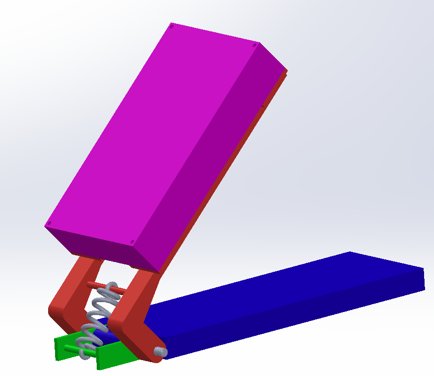

Academical Project
This is a duo project for the competitive examination: This is a project led by two devoted rugby men, including me, worried about their sport’s future, that solve a part of the players security issues which are at the center of the matter these days.

In fact, 74% of the concussions are linked with the tackle phase. So, we decided to engineer a prototype of a tackle shelter that could tell if the tackle was too high or not thanks to the survey of the impact point.
The 2 main parts of this project were: the electrical part with the sensors linked to the impact point signal treatment and the mechanical part with the spring dimensioning to use the kinetical energy of the player impact to push the spring used to lift back the shelter after the player removed from it
Electrical part:
Thanks to strength sensors under the foam of the shelter we managed to get the impact point of the player, then we compared where the contact was made and then a LED (red, yellow or green) turned on to give the height information to the tackler. We tested two main sensors: deformable strain gauge with on-off signal and tension proportional to the impact and piezoelectric cells. Finally we decided to keep the strain gauge even if it was more expensive.
Mechanical part:
Thanks to a geometric closure we managed to get the spring length through the position. We also managed to get an interval of the spring stiffness thanks to a derived mechanical energy theorem and a fundamental static principle both applied to the system. With those two features we choose the right spring to feat with the project
After those theorical studies we created a 1:3 scale prototype and ran some tests on both electrical and mechanical to verify the theorical results.